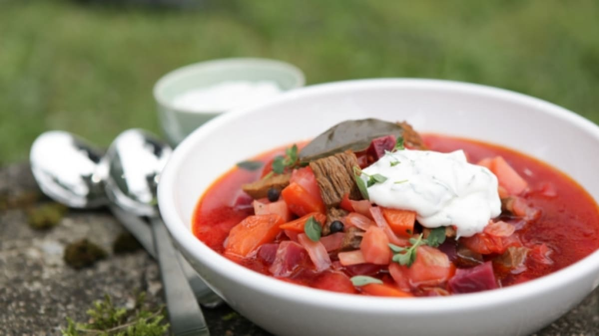

Tradiční ruská polévka s bohatým vývarem a výraznou chutí červené řepy.
Ingredience jsou uvedeny na hrnec 2 - 2,5 l. Základem je správně uvařený vývar. Hovězí s kostí umyjeme ve studené vodě, vložíme do hrnce, zalijeme studenou vodou a dáme vařit. Po vícenásobném vzkypění stáhneme teplotu, sebereme z vývaru pěnu. Osolíme, pak vaříme na mírném ohni asi 1,5 hodiny. 10 - 15 minut před koncem vaření vývaru přidáme celý pepř a bobkový list.
Z vývaru vyjmeme maso, vývar přecedíme. Maso musí být měkké, rozebereme ho rukama na vlákna asi 2 - 3 cm dlouhé. Kousky masa vložíme zpět do vývaru a přidáme větší teplotu. Když se nechcete s masem dlouho trápit, můžete nakrájet na kostky.
Nakrájíme brambory na kostky 2 x 2 cm a vložíme do vývaru. Zase po vzkypění stáhneme teplotu a necháme vařit asi 15 minut. Zelí nakrájíme na nudličky a také dáme do hrnce a zvětšíme teplotu, znovu teplotu stáhneme, když začne kypět. Necháme tak vařit na mírném ohni.
Zatímco se vaří brambory a zelí, připravíme si ostatní zeleninu. Cibuli nakrájíme na menší kostky, mrkev a červenou řepu oškrábeme a nastrouháme.
Na pánvi osmažíme cibuli dozlatova, pak přidáme mrkev. Necháme trochu osmažit. Pak přidáme nastrouhanou červenou řepu. Ještě trochu vše smažíme. Z hrnce, kde se vaří brambory se zelím, vezmeme asi 2 naběračky vývaru a přidáme ho do pánve. Trochu osolíme, opepříme, přidáme rajský protlak, vše pečlivě promícháme a necháme dusit doměkka.
Po změknutí řepy celou zápravu z pánve dáme do hrnce a zvětšíme oheň. Pozor! Po vzkypění vaříme boršč jen 2 minuty a pak hned vypneme oheň! Přidáme drcený česnek a promícháme.
Klasický ruský boršč přikryjeme pokličkou a necháme stát asi 15 minut, až poté podáváme.